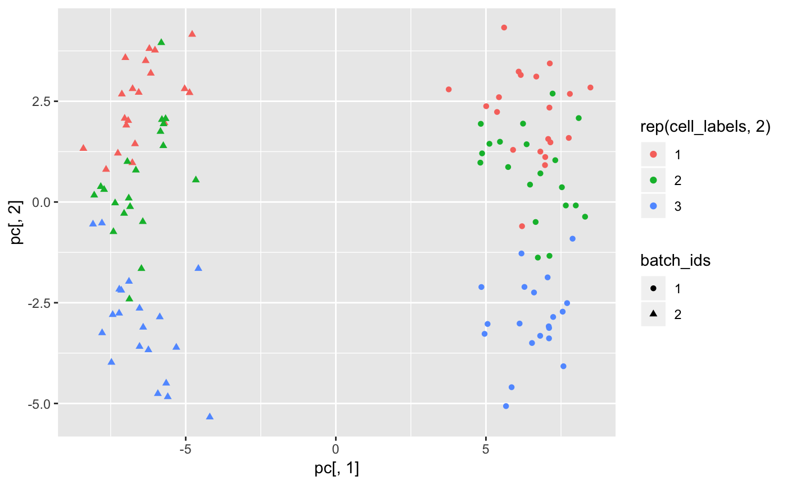
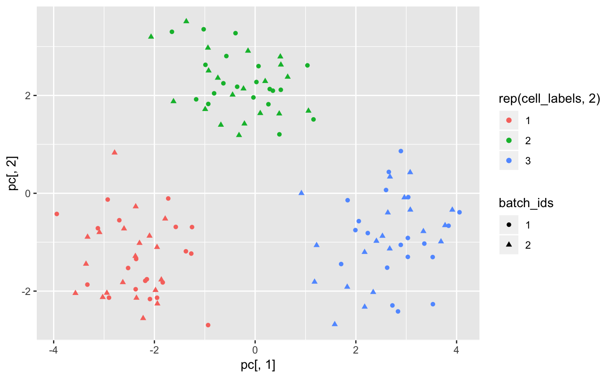
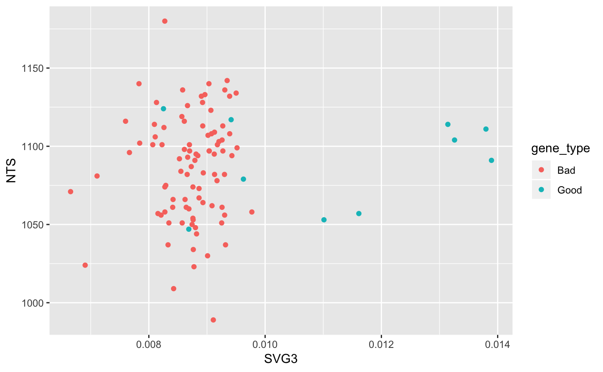

toy-example.RmdWe’ll make two batches of data.
Each batch has the following paraemeters
n_clusters <- 3 # number of clusters
n_cells_per_cluster <- 20 # number of cells per cluster
n_cells <- n_clusters*n_cells_per_cluster # number of cells per batchBatch labels
For this toy example, each batch has the same proportion of cells
First ten genes are good, containing information about the cluster identity. The remaining genes are bad, containing only batch effects.
Helper function
# Returns a m-by-n matrix of normal random variables with zero mean and unit variance
rnorm_mat <- function(m,n){
return(matrix(rnorm(m*n),m,n))
}Simulate cluster centroids
Simulate batch effects
makeData <- function(batch_id){
dat <- (1/sqrt(2))*rnorm_mat(n_genes,n_cells)
for(i in 1:ncol(dat)){
dat[,i] <- dat[,i] + centroids[,cell_labels[i]] + batch_effects[,batch_id]
}
rownames(dat) <- paste0("g",1:nrow(dat))
return(dat)
}
X <- makeData(batch_id = 1)
Y <- makeData(batch_id = 2)
colnames(X) <- paste0("X",1:ncol(X))
colnames(Y) <- paste0("Y",1:ncol(Y))
Z <- cbind(X,Y)Use all the genes to run PCA
library(ggplot2)
pc <- prcomp(t(Z),rank. = 2)$x
qplot(pc[,1],pc[,2],color =rep(cell_labels,2),shape = batch_ids)
Using only the good genes to run PCA
pc <- prcomp(t(Z[good_genes,]),rank. = 2)$x
qplot(pc[,1],pc[,2],color =rep(cell_labels,2),shape = batch_ids)
The following is precomputed.
system.time(res_list_toy_example <- run_corgi(X,Y,n_phases = 1,time_per_phase = 10))
res <- res_list_toy_example[[1]]
sum(res[,"num.times.sampled"])/10The following load the precomputed corgi output.
res <- res_list_toy_example[[1]]
SVG3 <- res[,"SVG3"]/res[,"num.times.sampled"]
NTS <- res[,"num.times.sampled"]
gene_type <- c(rep("Good",10),rep("Bad",90))
qplot(SVG3,NTS,color = gene_type)